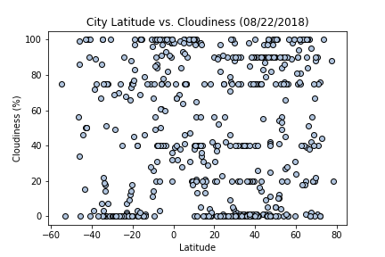
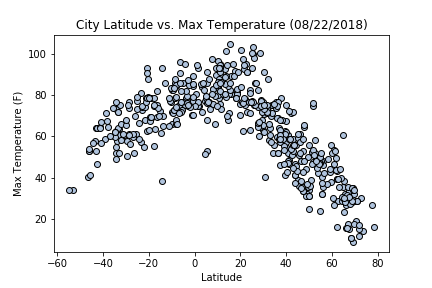
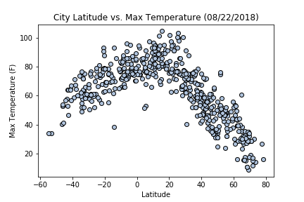

Summary: Latitude vs. X
Purpose
The purpose of this assignment was to use Python, Python APIs and my knowledge of Matplotlib and Pandas to analze data about how weather changes as we move closer to the equator.
To start off this assignment, I pulled data using Open Weather Map's API. With this I was able to gather a dataset of over 500 cities.
After pulling this data and converting it to a CSV file, I use my knowledge of Matplotlib and Pandas to plot various various aspects of weather versus latitude. Factors I looked into included: temperature, cloudiness, wind speed and humidity.
This site showcase my homework as well as what I have learn about HTML and CSS.
I hope you enjoy.
Visualization
Please Note that all pictures below are clickable!
Below are the charts that I created for this project. Each chart compares the city latitude with different components.
The components are Cloudiness, Humidity, Max Temperature, and Wind Speed.
Each chart can be further explain on it's own section in the Plot section of the dropdown menu
 
